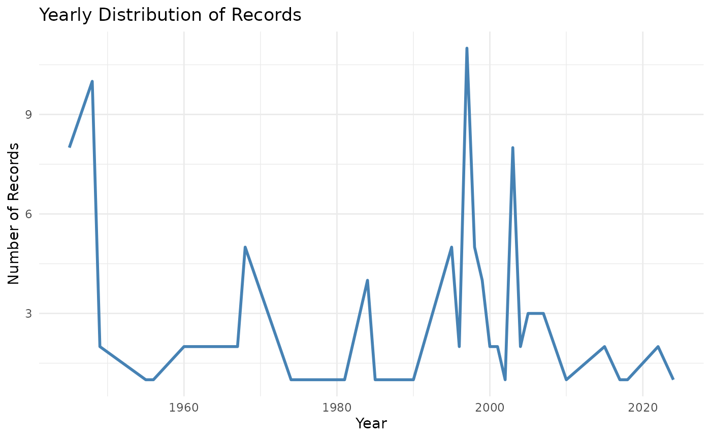
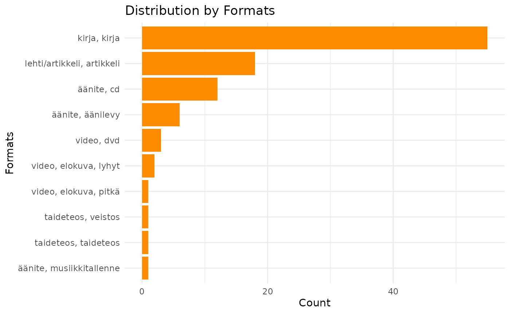
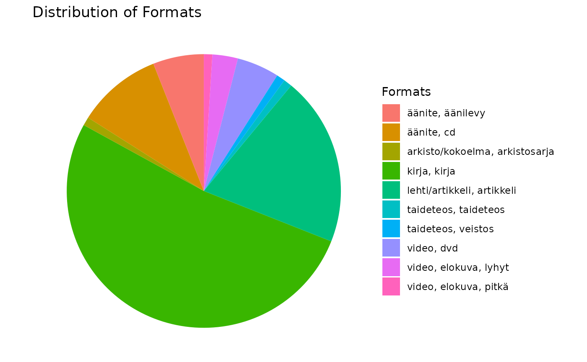

Refine, integrate and analyse Finna metadata
Source:vignettes/articles/refinemetadata.Rmd
refinemetadata.RmdIntroduction
This vignette provides an overview of how to use the finna package.
Refine using refine_metadata()
function
library(finna)
sibelius_data <- search_finna("sibelius")
refined_data <- refine_metadata(sibelius_data)
print(refined_data)## # A tibble: 100 × 8
## Title Author Year Language Formats Subjects Library Series
## <chr> <chr> <chr> <chr> <chr> <chr> <chr> <chr>
## 1 Sibelius favourites : … Sibel… 2001 Unknown… Äänite… orkeste… Lapin … Unkno…
## 2 Sibelius Tappe… 1967 Unknown… Taidet… Unknown… Jyväsk… Unkno…
## 3 Sibelius Favén… Unkn… Unknown… Taidet… kaljuus… Lahden… Unkno…
## 4 Sibelius Tawas… 2003 fin Kirja,… Sibeliu… Anders… Unkno…
## 5 Sibelius Ringb… 1948 fin Kirja,… Sibeliu… Eepos-… Unkno…
## 6 SIBELIUS TÖRNE… 1945 fin Kirja,… SIBELIU… Helle-… Unkno…
## 7 Sibelius Lampi… 1995 fin Kirja,… Sibeliu… Kansal… Unkno…
## 8 Sibelius Lampi… 2005 fin Kirja,… Sibeliu… Kansal… Unkno…
## 9 Sibelius Lampi… 1984 fin Kirja,… Sibeliu… Kansal… Unkno…
## 10 Sibelius Tawas… 1997 fin Kirja,… Sibeliu… Kansal… Unkno…
## # ℹ 90 more rows
integrate using integrate_metadata()
Function
finna_data <- search_finna("sibelius")
other_data <- tibble::tibble(
Title = c("Sibelius Symphony No. 5", "Finlandia", "Valse Triste"),
Rating = c(5, 4, 3)
)
integrated_data <- integrate_metadata(finna_data, other_data, key = "Title")
print(integrated_data)## # A tibble: 103 × 9
## Title Author Year Language Formats Subjects Library Series Rating
## <chr> <chr> <chr> <chr> <chr> <chr> <chr> <chr> <dbl>
## 1 Sibelius favour… Sibel… 2001 NA Äänite… orkeste… Lapin … NA NA
## 2 Sibelius Tappe… 1967 NA Taidet… NA Jyväsk… NA NA
## 3 Sibelius Favén… NA NA Taidet… kaljuus… Lahden… NA NA
## 4 Sibelius Tawas… 2003 fin Kirja,… Sibeliu… Anders… NA NA
## 5 Sibelius Ringb… 1948 fin Kirja,… Sibeliu… Eepos-… NA NA
## 6 SIBELIUS TÖRNE… 1945 fin Kirja,… SIBELIU… Helle-… NA NA
## 7 Sibelius Lampi… 1995 fin Kirja,… Sibeliu… Kansal… NA NA
## 8 Sibelius Lampi… 2005 fin Kirja,… Sibeliu… Kansal… NA NA
## 9 Sibelius Lampi… 1984 fin Kirja,… Sibeliu… Kansal… NA NA
## 10 Sibelius Tawas… 1997 fin Kirja,… Sibeliu… Kansal… NA NA
## # ℹ 93 more rows
Analyze using analyze_metadata()
Function
sibelius_data <- search_finna("sibelius")
refined_data <- refine_metadata(sibelius_data)
analysis_results <- analyze_metadata(refined_data)
print(analysis_results)## $format_distribution
## # A tibble: 10 × 2
## Formats n
## <chr> <int>
## 1 Kirja, Kirja 55
## 2 Lehti/Artikkeli, Artikkeli 18
## 3 Äänite, CD 12
## 4 Äänite, Äänilevy 6
## 5 Video, DVD 3
## 6 Video, Elokuva, lyhyt 2
## 7 Taideteos, Taideteos 1
## 8 Taideteos, Veistos 1
## 9 Video, Elokuva, pitkä 1
## 10 Äänite, Musiikkitallenne 1
##
## $year_distribution
## # A tibble: 39 × 2
## Year n
## <chr> <int>
## 1 1948 10
## 2 1945 8
## 3 1997 8
## 4 1998 6
## 5 1968 5
## 6 1999 5
## 7 1996 4
## 8 2003 4
## 9 2015 4
## 10 1949 3
## # ℹ 29 more rows
##
## $author_distribution
## # A tibble: 54 × 2
## Author n
## <chr> <int>
## 1 Häyrynen, Antti 13
## 2 Sibelius, Jean 12
## 3 Downes, Olin, Sjöblom, Paul, Jalas, Jussi 4
## 4 Lampila, Hannu-Ilari 4
## 5 Ringbom, Nils-Eric 4
## 6 Pickenhayn, Jorge Oscar 3
## 7 Tawaststjerna, Erik 3
## 8 Tawaststjerna, Erik, Tawaststjerna, Erik T. 3
## 9 Barnett, Andrew 2
## 10 Gray, Cecil 2
## # ℹ 44 more rows1. Applying the visualize_year_distribution()
Function
sibelius_data <- search_finna("sibelius")
refined_data <- refine_metadata(sibelius_data)
analysis_results <- analyze_metadata(refined_data)
visualize_year_distribution(analysis_results$year_distribution)
2. Applying the visualize_top_20_titles()
Function
This function will visualize the top 20 titles from your dataset.
# Assuming you have a tibble with Finna metadata called `refined_data`
top_20_titles_plot <- visualize_top_20_titles(refined_data)
# To display the plot
print(top_20_titles_plot)
3. Applying the visualize_format_distribution()
Function
This function visualizes the distribution of the records by format.
# Plot the format distribution
format_distribution_plot <- visualize_format_distribution(refined_data)
# To display the plot
print(format_distribution_plot)
4. Applying the
visualize_library_distribution() Function
This function shows the distribution of the records by library.
# Plot the library distribution
library_distribution_plot <- visualize_library_distribution(refined_data)
# To display the plot
print(library_distribution_plot)
5. Applying the visualize_author_distribution()
Function
This function visualizes the distribution of the records by author.
# Plot the author distribution
author_distribution_plot <- visualize_author_distribution(refined_data)
# To display the plot
print(author_distribution_plot)
6. Applying the
visualize_subject_distribution() Function
This function visualizes the distribution of the records by subject.
# Plot the subject distribution
subject_distribution_plot <- visualize_subject_distribution(refined_data)
# To display the plot
print(subject_distribution_plot)